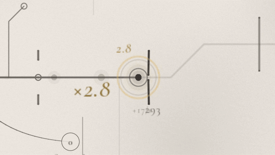
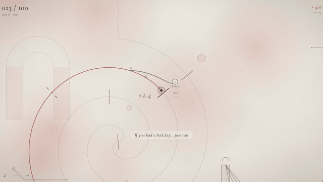
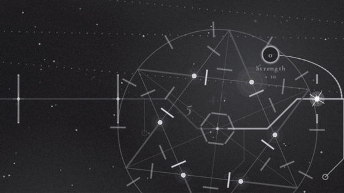
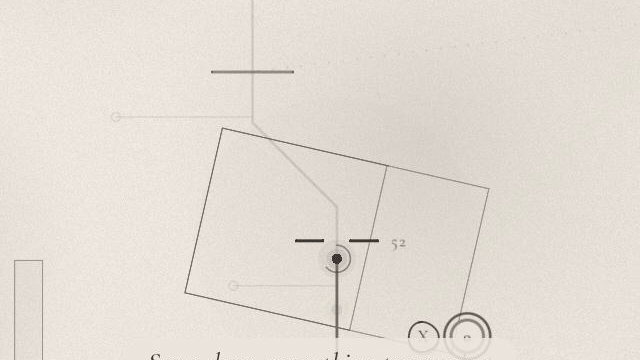
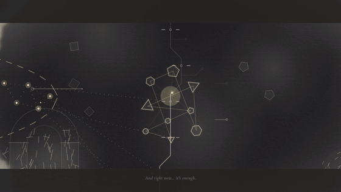

Just Tap now has its own soundtrack, and you play along
Esta entrada está escrita en inglés.
This is the biggest update since the demo came out. A player told me their forearm was sore from clicking, and that stuck with me. So I rebuilt the heart of the game around one idea: you don't have to tap more, you can tap with the music.

Tap with the music
- Taps on the beat are worth more: ×2 at first, growing with every beat in a row, up to ×5. Damage, light, crits, everything.
- Notes of light climb the line and reach the tip on each beat, so you can see when to tap instead of guessing.
- The voice teaches it at the start, with a soft harp marking the beat until you find it.
- Hold to keep going when your hand gets tired: the tip keeps tapping on every half beat.
- Long runs are celebrated: at 4, 8, 12, 16… beats in a row, a little cascade of notes rises and lands in a chord, and gold rings bloom from the tip.

A soundtrack of its own
Every part of the demo now has its own song: a gentle morning, a folk song with roots, a waltz in 3/4, a starry night, and a theme for the dark that slowly turns to major as you come out of it. The story and the letter at the end have theirs too.
- The beat you tap follows each song's own tempo and metre: the waltz really is one-two-three.
- Your taps play along, in the song's key, bar by bar, each song with its own colour: piano and harp in one, harp and celesta in the waltz, bells under the stars.

A tiny orchestra
When your light splits into many and runs a star, each light is an instrument. Off the beat, one answers at a time. On the beat, they play together across the beat like a broken chord, more of them the longer your run, and each one glows as it sings.

Gamepad support
- A (or either trigger) taps; hold it to keep going.
- RB / LB pick an upgrade on the tree, X buys it.
- Button prompts appear only when you play with a gamepad, drawn in the game's own ink, and they press themselves on the beat. PlayStation and Switch buttons are drawn as theirs.
And also
- New voice lines for the lesson on the beat.
- The title screen now suggests headphones: the game is much better with them.
- Menus show clearly which option you're on.
- Fixed: texts misaligned when the view turns, and the voice talking over the story's question.

Someone played it
Scansylabs recorded a playthrough on a rough day and called it "My soul feels warmer." Somewhere along the way they said it feels like a father talking to his child, which is exactly what the voice is meant to be. Watch it on YouTube. Thank you for playing, and for sharing it.
Thank you to everyone who played and wrote to me. Comments like "relaxing, I love this game" and "very peaceful" are exactly what I hoped this game would feel like. I'd love to hear how the rhythm feels, especially whether the beat is easy to catch.
AI disclosure: the narrator's voice and the soundtrack were generated with ElevenLabs from my own scripts and direction, and I use an AI assistant for programming. The design, the story, the art direction and the memories in it are mine.